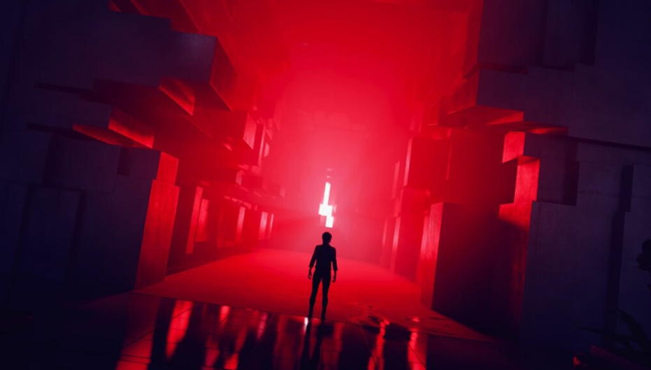

CONTROL - Remedy Entertainment
Control is a third-person shooter video game created by Remedy Entertainment, developer of critically acclaimed action-adventure video games including Max Payne, Alan Wake, and Quantum Break. A mind-bending supernatural adventure filled with fast-paced superpowered action, Control is the story of Jesse Faden, who finds herself caught in the midst of a deadly conflict between a secret government agency and otherworldly forces invading and corrupting ordinary reality.
